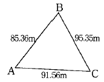
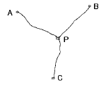
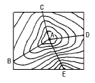
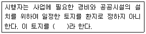
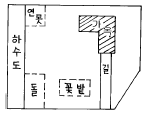

지적산업기사 (2002-05-26 기출문제)
1과목: 지적측량
1. 지적삼각 보조측량에서 2개의 삼각형으로 부터 산출한 교차가 종선 0.40m, 횡선 0.30m 일 때 연결오차는?
- 0.30m
- 0.40m
- 0.50m
- 0.60m
(정답률: 알수없음)

2. 도근측량에서 변장 ℓ , 방위각 α 일 때 종선차 △x는? (단, 고도는 없는 것으로 한다)
- △x = ℓ sin α
- △x = ℓ sec α
- △x = ℓ cos α
- △x = ℓ tan α
(정답률: 알수없음)
3. 지적도근점의 측량성과는 다음 중 어디에서 보관하는가?
- 읍, 면
- 소관청
- 시.도
- 행정자치부
(정답률: 알수없음)
4. 다각망도선법에 의한 지적삼각보조측량을 시행할 때 1도선의 점의 수는 몇 점 이하로 제한하는가?
- 기지점만 포함하여 5점 이하
- 기지점과 교점을 포함하여 5점 이하
- 기지점을 포함하여 20점 이하
- 기지점과 교점을 포함하여 15점 이하
(정답률: 알수없음)
5. 도근측량을 방위각법에 의할 경우 폐색변을 포함한 변수가 9변인 1등도선에 대한 폐색오차의 허용 한계는?
- ± 1분이내
- ± 1분30초이내
- ± 2분이내
- ± 3분이내
(정답률: 알수없음)
6. 다음 중 도근측량의 순서가 옳게 나열된 것은?
- 거리측정 → 선점 → 측각 → 조정 → 계산
- 선점 → 거리측정 → 측각 → 계산 → 조정
- 측각 → 선점 → 조정 → 계산 → 거리측정
- 거리측정 → 측각 → 조정 → 선점 → 계산
(정답률: 알수없음)
7. 축척 1/600 지역에서 도선법으로 16변의 폐합도선을 방위각법으로 관측하여 1.2㎜의 폐합오차가 생겼다. 4번째 변의 폐합차 배부량은?
- 0.1㎜
- 0.2㎜
- 0.3㎜
- 0.4㎜
(정답률: 알수없음)
8. 도선법에 의하여 측판측량을 실시할 경우의 다음 사항 중 옳지 않은 것은?
- 지적측량기준점 및 그밖에 명확한 기지점 간을 서로 연결한다.
- 도선의 측선장은 도상길이 8㎝ 이하로 한다.
- 도선의 변수는 25변 이하로 한다.
- 도선의 폐색 오차가 도상길이
 이하인 때는 오차를 배부한다.
이하인 때는 오차를 배부한다.
(정답률: 알수없음)
9. 측판측량방법에 의한 세부측량에서 지상경계선과 도상경계선의 부합 여부를 확인하는 방법이 아닌 것은?
- 지거법
- 도상원호 교회법
- 현형법
- 지상원호 교회법
(정답률: 50%)
10. 측판측량방법으로 거리를 측정할 때 도곽선의 길이에 몇 mm 이상의 신축이 있으면 보정해야 하는가?
- 0.1mm
- 0.3mm
- 0.5mm
- 0.7mm
(정답률: 알수없음)
11. 측판측량법에 의한 세부측량에서 측량성과와 검사성과의 연결교차의 허용범위로 맞는 것은 ? (M은 축척분모)
- 0.10미터 이내
- 0.25미터 이내
- 1M/10 밀리미터 이내
- 3M/10 밀리미터 이내
(정답률: 알수없음)
12. 축척 1/600에 등록된 토지의 면적이 70.65m2 로 산출되었다. 지적공부에 등록하는 결정면적은?
- 70m2
- 70.6m2
- 70.7m2
- 71m2
(정답률: 알수없음)
13. 지적도면을 재작성하는 방법에 해당되지 않는 것은?
- 직접자사법
- 간접자사법
- 정밀복사법
- 전자자동제도법
(정답률: 알수없음)
14. 축척 1/600 도면을 기초로 하여 축척 1/3,000 도면을 작성하려면 1/600 도면 몇 매가 필요한가?
- 10매
- 15매
- 20매
- 25매
(정답률: 알수없음)
15. 경위의측량방법으로 세부측량을 하는 경우 축척변경시행 지역의 측량결과도를 작성할 때 축척은?
- 1/500
- 1/600
- 1/1000
- 1/1200
(정답률: 알수없음)
16. 축척 1/1200인 지적도 시행지역의 세부측량을 측판측량방법으로 시행할 경우 도상에 영향을 미치지 않는 지상거리의 한계는?
- 100mm 이하
- 120mm 이하
- 140mm 이하
- 160mm 이하
(정답률: 알수없음)
17. 다각망도선법으로 지적삼각 보조측량을 할 때 1도선 거리의 범위는?
- 4km 이하
- 3km 이하
- 5km 이하
- 0.5km 이하
(정답률: 알수없음)
18. 경위의 측량방법에 의한 세부측량을 할 경우에 대한 설명으로 틀린 것은?
- 관측은 20초독 이상의 경위의를 사용한다.
- 도선법, 방사법, 교회법에 의한다.
- 수평각 관측은 1대회의 방향각 관측법에 의한다.
- 수평각 관측은 2배각의 배각에 의한다.
(정답률: 알수없음)
19. 다음 그림과 같이 세 변의 길이를 측정하였다. ∠BAC를 구하면?

- 96° 50′ 41″
- 86° 50′ 41″
- 65° 06′ 48″
- 22° 40′ 21″
(정답률: 알수없음)
20. 78° 30′ 20″ 를 호도법(radian)의 값으로 환산하면?
- 0.6721
- 1.6721
- 0.3702
- 1.3702
(정답률: 알수없음)
2과목: 응용측량
21. 도화기의 투영기에 사진을 올려놓고 지표를 맞추어 주점과 화면거리를 조정하는 표정은?
- 내부표정
- 상호표정
- 대지표정
- 접합표정
(정답률: 알수없음)
22. 단곡선에서 장현의 길이 ℓ 과 중앙종거 M을 알았을 때 단곡선의 곡률반경(R)을 구하는 식은?
- ℓ2/M
- ℓ2/2M
- ℓ2/4M
- ℓ2/8M
(정답률: 알수없음)
23. 다음의 지형표시 방법 중 하천, 항만 등의 수심을 표시하는데 적합한 것은?
- 모형법
- 점고법
- 영선법
- 음영법
(정답률: 알수없음)
24. 지형도의 등고선 종류로 적합하지 않은 것은?
- 주곡선
- 계곡선
- 간곡선
- 단곡선
(정답률: 알수없음)
25. 임의 점에 레벨을 세우고 표고 50m 인 A 점에 세운 표척을 읽은 값이 3.52m 이고 B 점에 세운 표척을 읽은 값이 2.35m 일 때 B 점의 표고는?
- 44.13 m
- 48.83 m
- 51.17 m
- 55.87 m
(정답률: 알수없음)
26. 다음 중 식생을 판독하는데 가장 부적합한 사진은?
- 팬크로 사진
- 천연색 사진
- 적외선 사진
- 다중파장대 사진
(정답률: 알수없음)
27. 축척 1/30,000로 촬영한 카메라의 초점거리가 15cm, 화면 크기는 23 x 23cm, 종중복도 60%일 때 이 사진의 기선고도비는?
- 0.61
- 0.45
- 0.27
- 0.76
(정답률: 알수없음)
28. 터널 양쪽 갱구를 연결하는 트래버스측량을 한 결과 합위거 = 23.45m이고 합경거 = 235.67m이었다. AB 갱구간의 거리는?
- 236.83m
- 259.12m
- 266.83m
- 270.12m
(정답률: 알수없음)
29. 수직갱에 의한 갱내외 연결측량에서 추선의 진동을 방지하기 위하여 어떤 조치를 하는가?
- 추선을 바닥의 고정핀에 연결한다.
- 추를 바닥에 설치된 기름탱크에 넣는다.
- 추선을 벽면에 설치된 고정장치에 연결한다.
- 추를 바닥에 깊이 10㎝ 정도로 묻는다.
(정답률: 알수없음)
30. 다음 중 수준측량에서 작업자의 유의사항에 대한 설명으로 틀린 것은?
- 표척수는 표척의 눈금이 잘 보이도록 양손을 표척의 측면에 잡고 세운다.
- 표척과 레벨과의 거리는 10m를 넘어서는 안된다.
- 레벨의 전방에 있는 표척과 후방에 있는 표척의 거리는 비슷한 것이 좋다.
- 관측수가 표척을 다 읽을 때까지 표척수는 움직여서는 안된다.
(정답률: 알수없음)
31. 교각 I=75° , 곡선반지름 R=100m, 노선시작점에서 IP까지 거리가 250.73m 일 때 시단현의 편각은? (단, 중심말뚝의 거리는 20m임)
- 4° 00′ 39″
- 1° 43′ 08″
- 0° 56′ 12″
- 4° 47′ 34″
(정답률: 알수없음)
32. 터널의 중심선을 천정에 설치하여 갱내 수준측량을 실시하였다. 기계를 세운 A점의 기계고(H.I)는 -1.00m, 표척을 세운 B점의 표척고(H.P)는 -1.50m, 사거리 50m, 연직각 +15° 일 때 두점 간의 고저차는?
- 13.44m
- 15.54m
- 12.54m
- 17.54m
(정답률: 알수없음)
33. 우리나라 도로의 구배를 표시하는 방법으로 옳은 것은?
- n / 10000
- n / 1000
- n / 100
- n / 10
(정답률: 알수없음)
34. 곡선 설치에서 교각 I = 60° , 반지름 R = 150m일 때 접선길이는?
- 50m
- 68.6m
- 86.6m
- 259.8m
(정답률: 알수없음)
35. 원곡선에서 교각(I) = 30° , 반지름(R) = 200m, 곡선의 시점(B.C) = No.32+5.0m 일 때 곡선의 종점(E.C)까지의 거리는? (단, 중심 말뚝 간격은 20m임)
- 267.7m
- 429.7m
- 589.7m
- 749.7m
(정답률: 70%)
36. A,B,C 세 수준점으로 부터 수준측량을 하여 P점의 표고를 결정한 값이 AP에서 210.732m, BP에서 210.758m, CP에서 210.786m 이었을 때 P점의 최확치는? (단, AP=4km, BP=3km, CP=2km임)

- 210.745m
- 210.750m
- 210.765m
- 210.770m
(정답률: 알수없음)
37. 다음 중 캔트(cant)에 대한 설명으로 가장 적당한 것은?
- 직선과 곡선의 연결 명칭이다.
- 토량을 계산하는 방법의 일종이다.
- 곡선의 바깥쪽을 안쪽보다 높이는 정도이다.
- 완화 곡선의 일종이다.
(정답률: 알수없음)
38. 그림과 같은 등고선도에서 경사가 가장 심한 곳은? (단, A점이 산정상임)

- AB
- AC
- AD
- AE
(정답률: 알수없음)
39. 다음 중 사진판독이 어려운 것이 아닌 것은?
- 지명,시,읍,면,리,계
- 기준점,작은담,문
- 큰병원,큰공장
- 작은굴뚝,물 밑의 공작물
(정답률: 알수없음)
40. 레벨에 의한 등고선 관측을 할 때 작업진행을 어느 방향으로 하는 것이 유리한가?
- 높은 곳에서 낮은 곳으로 작업한다.
- 낮은 곳에서 높은 곳으로 작업한다.
- 높은 산정상에서 지성선을 따라 작업한다.
- 중간 높이의 측점에서 양쪽으로 작업한다.
(정답률: 알수없음)
3과목: 토지정보체계론
41. 다음은 재개발의 종류를 나열한 것이다. 분류방법이 다른 하나는?
- 수복재개발
- 전면재개발
- 도심재개발
- 보전재개발
(정답률: 알수없음)
42. 도시 내부에 관한 구조이론 중 다핵심 이론(multipleneuclei theory)을 주장한 사람은?
- 해리스(Harris, C.D.)
- 버제스(Burgess, E.W.)
- 호이트(Hoyt)
- 튀넨(Von Thunen)
(정답률: 알수없음)
43. 어떤 도시 행정 면적 300ha, 호수 5,000호, 호당 평균 가족 수 5인일 때 이 도시의 인구밀도는?
- 약 47인/ha
- 약 78인/ha
- 약 83인/ha
- 약 95인/ha
(정답률: 알수없음)
44. 도시의 기능적 특화에 따른 분류가 아닌 것은?
- 거대도시
- 행정도시
- 산업도시
- 교육도시
(정답률: 알수없음)
45. 전국의 총고용인구는 2000만명이고 전국의 제조업 고용인구는 800만명이다. 그리고 가상도시의 총고용인구가 50만명이고, 가상도시의 제조업의 입지상은 1이다. 이 때 입지상법에 의하여 가상도시의 제조업 고용인구를 계산한다면 몇 명인가?
- 10만명
- 20만명
- 30만명
- 40만명
(정답률: 알수없음)
46. 다음의 [보기]에서 ( )안에 적당한 것은?

- 공지
- 체비지
- 보호지
- 비환지
(정답률: 알수없음)
47. 도시계획상 가로에 둘러 쌓여진 1구획을 무엇이라 하는 가?
- 가구
- 획지
- 구획
- 구역
(정답률: 알수없음)
48. 도시 계획상 모든 물리적 계획의 시설이나 규모를 규정하는 기준이 되기 때문에 착수계수(initial factor)라고 불리우는 것은?
- 토지이용 계획 계수
- 교통가로망 계획 계수
- 인구 계수
- 공급처리 시설 계획 계수
(정답률: 알수없음)
49. 다음 중 도심기능으로 보기 어려운 것은?
- 행정 및 업무기능
- 금융기능
- 상업기능
- 제조기능
(정답률: 알수없음)
50. 다음중 용도지역에 포함되지 않는것은?
- 녹지지역
- 공업지역
- 상업지역
- 공지지역
(정답률: 알수없음)
51. 도시를 규정하는 일반적인 정의와 관련이 적은 항목은?
- 인구· 물리적인 측면
- 사회· 경제· 문화적인 측면
- 지리적· 생태적인 측면
- 기능적인 측면
(정답률: 알수없음)
52. 전원도시의 조건으로서 맞지 않는 것은?
- 인구는 5-10만에 한정한다.
- 도시주의에 넓은 농업 지대를 가져야 한다.
- 시민 경제 유지에 만족할 만한 공업을 유치한다.
- 계획의 철저를 보존하기 위하여 토지를 영구히 공유로 한다.
(정답률: 알수없음)
53. 도시계획의 입안과정에서 모든 물리적 계획의 기준이 되는 착수계수로 이용되는 것은?
- 인구
- 시설
- 토지
- 생산
(정답률: 알수없음)
54. 우리나라 대도시의 토지이용 패턴의 특성과 거리가 먼 것은?
- 혼합성
- 자연 발생성
- 개방성
- 이중성
(정답률: 10%)
55. 도시내부구조에서 주택지역의 공간구조가 부채꼴 모양의 선형구조로서 파악될 수 있다고 하면서 선형이론을 제기한 사람은?
- 버제스(E. W. Burgess)
- 호이트(H. Hoyt)
- 해리스(C. D. Harris)
- 울만(E. L. Ullman)
(정답률: 알수없음)
56. 도시기본계획의 내용이 포함하지 않는 것은?
- 도시의 특성· 지표 및 계획목표에 관한 사항
- 도시의 토지이용· 개발 및 환경보전에 관한 사항
- 도시의 기반시설에 관한 사항
- 도시의 물류유통에 관한 사항
(정답률: 알수없음)
57. 나머지 3개 항목이 공통적으로 지향하는 바와 구분되는 항목은?
- Eco-city
- Technopolis
- Green City
- Ecological City
(정답률: 알수없음)
58. 장래인구예측방법이 아닌 것은?
- 과거추세에 의하는 방법
- 토지이용계획에 의하는 방법
- 정주모형에 의하는 방법
- 4단계 추정모형에 의하는 방법
(정답률: 알수없음)
59. 도시지역의 무질서하게 평면확산 되어가는 현상을 무엇이라고 하는가?
- 슬럼(Slum)
- 스모그(Smog)
- 스프롤(Sprawl)
- 스태그플레이션(Stagflation)
(정답률: 알수없음)
60. 근대적 이상도시의 하나인 하워드의 전원도시 계획에서와 같이 중심부에 대한 동심원형의 환상도로와 방사상 도로로 구성된 도로망 패턴은?
- 번개형(Tunder pattern)
- 선상형(Linear pattern)
- 격자형(Grid pattern)
- 초점형(Focal pattern)
(정답률: 알수없음)
4과목: 지적학
61. 토지조사사업 당시의 지목 중 비과세 지목에 해당하는 것은?
- 전
- 하천
- 임야
- 잡종지
(정답률: 50%)
62. 토지 조사시에 행정처분으로 사정한 경계의 행정적 의미는?
- 경계분쟁 해결
- 등록단위로서 필지획정
- 소유권의 양적 범위 결정
- 기초 행정확립
(정답률: 알수없음)
63. 소관청이 축척변경을 하고자 할 때는 시행 지구내 토지 소유자의 동의를 얻어야 하는데 이 때 얼마 이상을 얻어야 하는가?
- 1/2 이상
- 1/3 이상
- 2/3 이상
- 대표자의 동의만 얻는다.
(정답률: 40%)
64. 도해지적측량과 비교하여 수치지적측량의 장점이라고 볼 수 없는 것은?
- 정확도가 높다.
- 오측이 쉽게 발견된다.
- 컴퓨터에 의한 후속작업이 쉽다.
- 다양한 축척의 도면을 만들 수 있다.
(정답률: 알수없음)
65. 공유수면 매립지에서 제방을 편입하여 등록하는 경우에 일반적인 경계 측정의 기준은?
- 최대만수(조)면
- 제방외측 어깨부
- 제방내측 어깨부
- 제방내측 하단부
(정답률: 알수없음)
66. 다음 중 지적제도의 성격상 우리나라에서 발달하지 못한 지적제도는?
- 세지적
- 경제지적
- 법지적
- 도해지적
(정답률: 알수없음)
67. 다음 중 지적측량 대행법인의 성격은?
- 비영리 법인체
- 영리 법인체
- 사회 법인체
- 국가 법인체
(정답률: 알수없음)
68. 조선시대 양안에 기재된 내용 중 토지의 사방 경계를 나타내는 것을 무엇이라고 하는가?
- 사표
- 입안
- 대장
- 문기
(정답률: 알수없음)
69. 토지의 표시사항 중 면적을 결정하기 위하여 먼저 결정되어야 할 사항은?
- 토지소재
- 지번
- 지목
- 경계
(정답률: 알수없음)
70. 지적도의 일람도는 다음 중 어느 것에 해당하는가?
- 지적공부의 일종이다.
- 지적공부의 보조공부이다.
- 지적도이다.
- 지적도의 일부이다.
(정답률: 알수없음)
71. 다음 중 소관청이 토지이동 조사를 하는 기본권은?
- 시.군의 행정권
- 지방자치권
- 국가의 공권력
- 시장.군수의 고유권
(정답률: 알수없음)
72. 미등기토지를 등기부에 개설하는 보존등기를 할 경우에 소유권에 관하여 특별한 증빙서로 하고 있는 것은?
- 공증증서
- 토지조사부
- 토지대장
- 등기공무원의 조사서
(정답률: 알수없음)
73. 우리나라의 현행 지번에 붙이는 방식이 아닌 것은?
- 사행식
- 교호식
- 선별식
- 단지식
(정답률: 알수없음)
74. 다음 중 지번의 설정원칙이 아닌 것은?
- 기번의 원칙
- 연번의 원칙
- 종서의 원칙
- 북동기번의 원칙
(정답률: 알수없음)
75. 다음 중 지적의 기본이념으로만 열거된 것은?
- 국정주의, 형식주의, 공개주의
- 국정주의, 형식적심사주의, 직권등록주의
- 등록임의주의, 형식적심사주의, 공개주의
- 형식주의, 민정주의, 직권등록주의
(정답률: 80%)
76. 다음 중 지목을 하천으로 결정할 수 있는 기준에 해당하는 것은?
- 제방이 있을 것
- 규모가 크고 자연적인 유수가 있을 것
- 물을 토지에 경작하는데 이용할 수 있을 것
- 물의 깊이가 50㎝이상일 것
(정답률: 알수없음)
77. 다음 중 현재의 토지대장과 같은 것은?
- 문기(文記)
- 양안(量案)
- 사표(四標)
- 입안(立案)
(정답률: 알수없음)
78. 다음 그림에서 주지목추종(主地目追從)에 따라 지목을 결정할 때 주된 지목은?

- 밭(田)
- 잡종지
- 대(垈)
- 공원지
(정답률: 알수없음)
79. 다음 중 지적측량을 수반하지 않는 토지이동은?
- 신규등록
- 등록전환
- 지목변경
- 분할
(정답률: 알수없음)
80. 다음 중 지적공부상 토지소유자의 이동정리를 할 수 없는 것은?
- 등록전환시 임야대장에 의한 정리
- 토지매매 계약서에 의한 정리
- 등기부 등본에 의한 정리
- 확정판결 정본에 의한 정리
(정답률: 알수없음)
5과목: 지적관계
81. 건축물의 위반사항을 시정할 때까지 반복하여 부과할 수 있는 것은?
- 벌금
- 과징금
- 과태료
- 이행강제금
(정답률: 알수없음)
82. 지적법의 기본이념으로 옳지 않은 것은?
- 지적국정주의
- 지적형식주의
- 지적공개주의
- 형식적심사주의
(정답률: 알수없음)
83. 지적도 및 임야도에 등록할 지목의 표기방법으로 옳은 것은?
- 하천(河川):하, 제방(堤防):제, 구거(溝渠):구, 공원(公園):공
- 하천(河川):하, 제방(堤防):제, 구거(溝渠):구, 공원(公園):원
- 하천(河川):천, 제방(堤防):제, 구거(溝渠):구, 공원(公園):원
- 하천(河川):천, 제방(堤防):제, 구거(溝渠):구, 공원(公園):공
(정답률: 알수없음)
84. 도시계획법상의 용도지역.지구에 관한 설명 중 틀린것은?
- 지역을 다시 세분한 것이 지구가 되는 것은 아니다.
- 지역이나 지구는 상호 중복 지정 될 수 없다.
- 일반주거지역은 세분하여 지정될 수 있다.
- 시설보호지구는 세분하여 지정한다.
(정답률: 알수없음)
85. 시장, 군수가 도시기본계획수립과 관련하여 공청회를 개최하고자 하는 때에는 예정일의 며칠 전까지 그 사실을 공고하여야 하는가?
- 7일전
- 14일전
- 21일전
- 28일전
(정답률: 알수없음)
86. 지적법에 의해 1년이하의 징역 또는 500만원이하의 벌금에 처해지는 경우는?
- 등록전환의 신청의무를 게을리 한 자
- 신규등록의 신청의무를 게을리 한 자
- 토지이동의 신청을 허위로 한 자
- 지적측량에 의해 토지의 일시적 사용을 정당한 사유없이 방해한 토지소유자
(정답률: 알수없음)
87. 다음중 소관청이 관할등기소에 등기를 촉탁할 수 있는 경우가 아닌 것은?
- 축척변경을 한때
- 소관청이 직권으로 등록사항 정정을 한때
- 행정구역의 개편으로 새로이 지번을 정한 때
- 토지소유자의 신청에 의하여 신규등록을 한때
(정답률: 알수없음)
88. 토지이동에 따른 지적공부 정리 방법으로 가장 타당한 것은?
- 토지소유자의 신청에 의해서만 할 수 있다
- 토지 소유자의 신청이나 소관청의 직권으로 정리한다
- 토지 소유자와 소관청간의 협의하여 결정한다
- 소관청이 토지소유자의 신청에도 불구하고 직권정리한다
(정답률: 알수없음)
89. 임야대장에 등록된 임야를 개간하여 뽕밭을 만들어 지적도에 등록하는 토지이동사항은?
- 신규등록
- 지목변경
- 등록전환
- 토지분할
(정답률: 알수없음)
90. 지적법의 제정 목적을 올바르게 나타낸 것은?
- 소유권보호에 기여
- 효율적인 국토계획
- 합리적인 토지이용
- 용도지역 지정
(정답률: 알수없음)
91. 지적법에 의한 지적기술자의 징계 종류로서 잘못된 것은?
- 자격취소
- 감봉
- 견책
- 1월이상 3년 이하의 자격정지
(정답률: 알수없음)
92. 국토이용계획심의회의 심의사항으로 옳지 않은 것은?
- 토지 등의 거래계약 불허가 처분에 대한 이의 신청
- 국토이용계획의 결정과 변경
- 토지의 거래계약 허가구역의 지정과 해제
- 토지정책에 관한 주요사항
(정답률: 알수없음)
93. 다음 중 지적공부 등록을 말소할 수 있는 사항은?
- 하천으로 된 토지
- 바다로 된 토지
- 등록전환
- 행정구역의 통· 폐합
(정답률: 알수없음)
94. 다음 중 등기신청서의 기재사항이 아닌 것은?
- 도면
- 등기원인과 그 연월일
- 지목과 면적
- 등기소의 표시
(정답률: 알수없음)
95. 국토이용관리법상 준도시지역으로 입안할 수 있는 지역은?
- 자연환경보전지역
- 문화재보호법에 의한 문화재 및 문화재보호구역
- 도로법에 의한 접도구역
- 취락지구주민의 집단적 생활근거지로 이용되거나 이용될 지역
(정답률: 알수없음)
96. 도시개발계획의 내용이 아닌 것은?
- 공간구조 계획
- 재원조달 계획
- 환경보전 계획
- 인구수용 계획
(정답률: 알수없음)
97. 지적측량 대행법인의 설립요건으로 잘못된 것은?
- 자산규모가 5억원 이상일 것
- 사단법인일 것
- 300인 이상의 지적기술자를 고용할 것
- 업무구역을 전국으로 하되, 전체 시· 군· 구의 3분의 2이상에 출장소를 두고 있을 것
(정답률: 알수없음)
98. 다음 중 공시의 원칙과 거리가 먼 것은?
- 물권은 물건에 대한 배타적인 권리이므로 모든 사람에게 공시되어야 한다.
- 물권의 변동은 언제나 외부에서 인식할 수 있도록 공시해야 한다.
- 공시의 원칙은 거래의 안전을 위한 제3자를 보호하기 위한 것이다.
- 동산물권과 부동산물권은 모두 등기라는 공시방법을 채택하고 있다.
(정답률: 알수없음)
99. 등기의 대상이 되는 것은?
- 판결
- 공용징수
- 매매
- 경매
(정답률: 알수없음)
100. 우리 민법상 단독으로 유효한 법률행위를 할 수 있는 자는?
- 혼인을 한 18세의 여자
- 금치산자
- 한정치산자
- 19세의 혼인을 하지 않은 남자
(정답률: 알수없음)